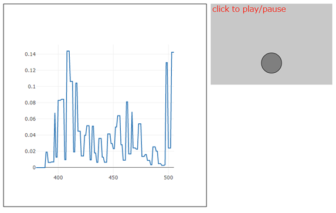

かならずお読みください→
サウンドスイッチのつくりかたができるまで
どこかでみたようなこの画像？
いえいえ安井さんのこのサンプルがお手本なんです ここに感謝
前回は、こえをかければへんじするしろいいぬのサンプルを紹介しました。いかがだったでしょうか？
そのなかでもお話しましたが、何年か昔に声や音でオンオフできるスイッチを作ろうと計画をしました。しかしよく調べるとずいぶんお金がかかりそうだったため結局あきらめました。 もし思い切ってやっていたら多分何台かの試作品はできたでしょう。 珍しい機械ですからそれなりに話題になり、ありがたがるひともいたかもしれません。 しかしこのようなものは長続きした例があまりありません。じきに忘れられやがて消えてしまいます。 このようなビジネスが持続するのは容易ではありません。当時も今もこの考えはかわりません。
これと反対に
世界中でその道具を必要とし希望する人に必要とするだけ、ごく短時間（例えば10秒くらい）それもごく低価格（例えば無料で）届けること、これができたらどうなるでしょうか？
つまり、ご本人がやりたいと思ったら次の瞬間には、もう準備できてトライできる。
希少性などまるでなし。どこにもいくらでも普通に存在する。このほうがよほど価値があることだと思っています。そしていまもこれを目指していろいろやっています。
さて今回、ここまでのwebアプリの流れから、サウンドスイッチをソフトウエア（JavaScript）で作ろうとしました。ところがこれが予想以上にあっさり実現できて我ながら驚いてしまいました。
すでにパソコンやタブレットなどの情報機器が普及していて、多くの人が日常的に使っています。 またインターネットが身近にあり、様々な情報が瞬時に容易に手に入ります。 これらのおかげで、かつてハードウエアで苦戦したことがソフトウエアであっさり実現できる。そんな世の中になっているようです。
ソフトウエアを作ること、つまりプログラミングのメリットはこれからも大きくなり続けるでしょう。 これですから小学生にプログラミングを教えるなんてことになるわけです。夏休みの自由研究ももうプログラミングでいっぱいでしょう。 考えてみると『しろいいぬ』も自由研究むきだと思います。わんわん。
まず音をとって大きさを測れないことには話は前に進みません。そこで 「JavaScript マイク 音量 測定」と検索するところから始めました。 ヒットしたうちの何件かを読んでみると、getLevelという関数がよく使われていることがわかりました。次に「getLevel」で検索して何件か見比べてみると、永井さんのサイトが飛び抜けて解説もサンプルも丁寧に作られていることが分かりました。
そのサイトがこちらです。文末の参考URLにもあります。
カテゴリー: p5.sound.js サウンド ヒムカンパニー
https://himco.jp/2020/01/11/:マイク入力-p5-sound-js-サウンド/
このページの一番上の目次の次に参考にしたサンプルが紹介されています。 まずJavaScriptのプログラムが紹介されその下にサンプルへのリンクつきの画像があります。（本ページトップ画像参照）
まず、このリンクからサンプルを実行し、p5.js Examples.htmファイルを確認します。 （サンプルの実行画面からCTRL+Sでhtmlファイルが保存できます。また右クリックメニュウからソースを表示もできます。）
永井さんのサンプル本体、p5.js Examples.htm を次に示します。
<!doctype html> <html lang="ja"> <head>p5.js Examples </head> <body></body> </html>
6-9行を見るとp5.js関係のファイルはnet経由で入手する仕組みになっています。
10行目のgraph.jsと11行目のsketch.js、（.jsはJavaScriptの意味です）は別にあり、このhtml（p5.js Examples.htm）と合計3つのファイルでこのサンプルが動いていることがわかります。
ここでp5.js Examples.htmは画面に表示されています。
さらに
10行目のリンクをクリックすると、js/graph.jsが表示されます。これは画面左の音量グラフを描画する仕事をしていることが分かります。
11行目も同様に、sketch.jsが表示されます。こちらはマイクをオンオフしたり、表示の操作をしています。
これで必要な3つのファイルが全部表示され手元にコピーできます。
以上の手順でファイルをコピーし自分のパソコンの任意の場所に保存します。 そのうえでp5.js Examples.htmを起動すると、自分のパソコンで同じサンプルが動作します。他の人が作ったプログラムを勉強するには、このようにするとはかどります。
本来ですと、手に入れた永井さんのサンプルをじっくり勉強してそれを参考にして自分のプログラムを作るべきところですが、あまりにお手本が立派で、またマイク音量のグラフ表示はとてもきれいで声を出す練習やマイクの調整には是非ほしい機能です。いろいろ悩んだすえ、あっさりシャッポを脱いで（脱帽）こちらのサンプルにうちのしろいいぬをおじゃまさせていただくことにしました。
まずp5.js Examples.htmを改造します。紛らわしいのでこのタイミングで、index.htmlにリネームします。
<!doctype html> <html lang="ja"> <head>p5.js Examples2 </head> <body></body> </html>
16行でグラフの表示幅を狭めて
31行でいぬの場所を真ん中に設定します。
graph.jsは音量グラフを作りますが、オリジナルのまま使わせていただくことにしました。
次に、sketch.jsです。オリジナルは以下の通りです。
// マイクからの入力を取得し、振幅値(音声レベル)を使って円を上下に動かす
let mic;
let isGetting = false;
let h;
function setup() {
const canvas = createCanvas(300, 200);
canvas.parent('sketch-holder');
// AudioInオブジェクトを作成
mic = new p5.AudioIn();
// キャンバスのクリックで、マイク入力取得のオン/オフを切り替える
canvas.mouseClicked(toggleMic);
h = height;
textSize(20);
}
function draw() {
background(200);
if (isGetting) {
// 全体の音量を得る(0～1.0の間)
const vol = mic.getLevel();
// 音量にもとづく高さで円を描く
h = map(vol, 0, 1, height, 0);
// 取得した音量レベルをグラフで表示
plot(frameCount, vol);
}
// 円を(h-25)の高さで描画
fill(127);
stroke(0);
ellipse(width / 2, h - 25, 50, 50);
// 文字を描画
fill(255, 0, 0);
noStroke();
text('click to play/pause', 4, 20);
}
// マイク入力取得のオン/オフを切り替える
function toggleMic() {
if (isGetting) {
// AudioInオブジェクトをオフにする
mic.stop();
isGetting = false;
}
else {
// AudioInオブジェクトをオンにする
// デフォルトでは、.connect()しない(コンピュータのスピーカーに)
// => スピーカーから音声は聞こえない
mic.start();
isGetting = true;
}
}
function touchStarted() {
// ユーザージェスチャでオーディオコンテキストを開始する
userStartAudio();
}
説明のコメントがたくさんあって立派ですね。
マイクの音量を取得するのはgetLevelで、22行にあります。
このサンプルでは、volという定数に代入して後の描画処理をしています。
私の場合ほしいのはここまでで、描画部分は必要ありません。
volの値が閾値をこえたら、しろいいぬが吠える動画を表示して
吠え声の音声ファイルを再生する部分をここに入れます。
改造後は次のようになりました。
// マイクからの入力を取得し、振幅値(音声レベル)を使って円を上下に動かす
let mic;
let isGetting = false;
let h;
function setup() {
const fr = 2; // 毎秒30フレームを描画
// const fr = 12; // 毎秒12フレームを描画
// const fr = 2; // 毎秒2フレームを描画
// const fr = 0.5; // 毎秒30フレームを描画
frameRate(fr);
const canvas = createCanvas(300, 200);
canvas.parent('sketch-holder');
// AudioInオブジェクトを作成
mic = new p5.AudioIn();
// キャンバスのクリックで、マイク入力取得のオン/オフを切り替える
canvas.mouseClicked(toggleMic);
h = height;
textSize(20);
}
function draw() {
background(200);
if (isGetting) {
// 全体の音量を得る(0～1.0の間)
const vol = mic.getLevel();
console.log("vol =", vol);
if(vol > 0.03){
var elemdog = document.getElementById("image_dog");
elemdog.src = "./dogf.gif";
audioElem = new Audio();
audioElem.src = "./dog2.mp3";
audioElem.play();
setTimeout(function(){
//console.log("舌をだしました")
elemdog.src = "./dogde.gif";
},1000);
}
// 音量にもとづく高さで円を描く
//h = map(vol, 0, 1, height, 0);
// 取得した音量レベルをグラフで表示
plot(frameCount, vol);
}
// 円を(h-25)の高さで描画
fill(127);
stroke(0);
//ellipse(width / 2, h - 25, 50, 50);
// 文字を描画
fill(255, 0, 0);
noStroke();
text('click here to play/pause', 4, 20);
}
// マイク入力取得のオン/オフを切り替える
function toggleMic() {
if (isGetting) {
// AudioInオブジェクトをオフにする
mic.stop();
isGetting = false;
}
else {
// AudioInオブジェクトをオンにする
// デフォルトでは、.connect()しない(コンピュータのスピーカーに)
// => スピーカーから音声は聞こえない
mic.start();
isGetting = true;
}
}
function touchStarted() {
// ユーザージェスチャでオーディオコンテキストを開始する
userStartAudio();
}
31-44行を追加しました。31行でマイク音量計測値をコンソールに出力します。
音量が0.03を超えたら（33行）いぬの画像を吠えている画像に変更し（34-35行）犬の声に音声ファイルを再生し（36-38行）1秒後に画像を元にもどします。（40-43行）
オリジナルの描画部分47行54行はコメントアウトしてあります。
このサンプルでしろいいぬのアニメやなき声をだすためには以下のファイルをindex.htmlと同じ場所に保存しておく必要があります。右クリックから保存してください。
dogde.gif
dogf.gif
dog2.mp3
この段階で試運転してみるとなんだか動きにもたつきがみられました。 タスクマネージャで見ると『電気を食いすぎ！』と表示がでました。 これでは地球環境によくありません。グレタ・トゥーンベリさんに叱られます。
しらべると、p5.jsでは、今回の例では25行から60行までのdrawファンクションの中は、デフォルト（何もしなければ自動的に）で60Hzで動くのだそうです。 各種の動画を芸術的に再生するためにはこのように8K並の高いFPSが必要なようです。しかし 日本のテレビは30Hz、映画は24Hz、ましてや今回の目的は音量測定ですので60Hzは過剰品質です。そこで30分の1の２Hz に設定しました。（9-13行）
再びタスクマネージャで確認すると節電できていました。 これで大勢でワンワンやっても海水面が上がってくる心配はなくなりました。（多分ね）
次に音や声に反応するスイッチ（命名サウンドスイッチ）でどんな新しいことができるか考えてみましょう。
まず通常のスイッチ操作が苦手な人の支援が考えられます。通常スイッチを操作するには、手指などで所定の操作をする必要がよくあります。ボタンでも、スワイプでも同じです。手指の代わりに口に加えた棒（マウススティック）を使うこともあります。ごく小さい運動をスイッチ操作に利用する装置として、パシフィックサプライのPPSスイッチがあります。これを使うと瞬きやようやく目に見える程度のごく小さい動きでもスイッチとして利用できます。しかしこれら従来のスイッチ操作では不確実だとか、数が少ないなどで困っていることもあります。
この場合、従来使われてきた方法に加えてサウンドスイッチが使えるかもしれません。 また従来の方法ではスイッチ操作が不安定または不確実でも、声は安定してだせる場合にはスイッチ操作ができるかもしれません。よく知られているように音声認識では、明瞭でしっかりした言葉が正しい認識に必要ですがサウンドスイッチの場合は、ただ設定した音量の声や音に反応しますのでより取り組みやすい性質を持っています。
しかし、騒音が大きい環境などでは思ったように使用できないことも予想できます。どんな環境でどこまで使えるのかこれから経験をつむ必要があります。
また、これまでスイッチ操作や機器操作になじんでおられない場合は、いろいろ覚えたり練習することが必要になると思います。この際に『こうしなくちゃいけない』『これやっちゃだめ』がストレスになることもあるかもしれません。 あれこれ急に始めてその方の負担が重くならないように周囲の皆さんの配慮が必要だろうと思われます。
またどのような目標からどのように取り組んでいったらいいか考える必要があります。 その方を長く見守ってきた方々の意見も大切と思います。
このようにまだまだやるべき仕事は残っています。おおくのひとがこの取り組みに参加できるようにすることがこのページで作り方を説明している目的のひとつです。
ある日病棟に行くと、ご高齢のご婦人がふたりで楽しそうに世間話をしていました。 あまり楽しそうなのでしばらくそばで聞いていると、お二人の話がまるでかみあっていないことに気が付きました。 どうやらこのお二人はお相手の話はひとまず関係なく、自分の言いたいことを交互に話しているだけなのでした。しかしそれでもおふたりともニコニコとずいぶん楽しそうなのがなんとも不思議なことでした。
師長さんのお話では、 お二人はこの病棟で初めて会って、とても気があったのかこんなに楽しそうにお話するようになりました。これはまったく偶然でスタッフも驚いています。 けれどもうじきおひとりは転院の予定があるので、さあこれからどうなるのか気になります。 こんなこともあるのですね。
別のある休日、家の前の路上でうちの奥さんと近所の奥さんとの世間話がはじまりました。二階の私にも聞こえてきましたから、多分ご近所にも聞こえたことでしょう。 しばらく聞いていましたが、会話の内容はまあほぼ上の例と似たようなものでした。 そんなこともありました。
さてこのようにみると、『コミュニケーション』と言ってもその範囲はかなり広いことに気が付きます。片や『議論』『討論』『説得』『情報伝達』『意志伝達』、そして片や『おしゃべり』があります。
コミュニケーションというとつい固い内容のほうを想像しがちですが、 日常生活では『おしゃべり』つまり、とりとめもなくはじまって、だらだらと続き、とりとめもなく終わり、そして話の中身はたいしたことなくお互いすぐわすれてしまう、そのような会話がとても多いことがわかります。酒の席も似たようなものです。
それなのにあるいはそれだから『おしゃべり』は、多くの人の生活に精神的安定や安らぎと場合によっては人間関係の緊張感をもたらしているのはみなさんご存じの通りです。
またとくに人生のごくはじめの方の人、またはごくおわりの方の人々にとって、（場合によっては両者の中間の人も）話の内容や意味合いはそれほど大切ではなく、またむつかしいこと言われてもよくわからないし、でもだれかといっしょにたのしく『おしゃべり』して楽しく時間を過ごしたいたいという ご要望がかなりあると思われます。
それなのに、ときどきやってくる家族はたいていむつかしい話ばかりして、いそがしそうでゆっくり話相手もしてくれない。 しかたがないから、テレビの人や、好きな人形（病棟で増加中！）や、ペットのねこちゃんやとなりのワンちゃんとお話ししたり遊んだりしている。
もしかしたら、 この『こえをかけるとへんじするしろいいぬ』は、こんなひとたちの何かの役にたつのではないでしょうか？ まだまだ改良がかなり必要だと思いますが、これは『パロ』がやろうとしていることにかなり近いように思われます。
いろいろ先々のことを書きましたが、今日からできる使い方もあります。
赤ちゃんが泣き出したら、なんとかあやそうとしてわんわんとなくしろいいぬ。
はたして赤ちゃんは泣きやむでしょうか？
おもちゃであそんでいるといろいろなことに気がつきます。 不自由のあるこどもたちのためのおもちゃとおもっていたのに、ご高齢のかたにもおもちゃが必要かもしれないと思い始めたことなどもそのひとつです。 このほか 小学生のためにひらがなしか使わないようにしたら、高齢の方から見やすいと言われたり、 ことばがふじゆうなひとのためにことばを使わない『しろいいぬ』を登場させたら どこの国のひとにも使えそうなものになってきたりします。
日本語のわんわんは、英語で bow-wow （バウワウ） フランス語で ouah-ouah （ウワウワ） イタリア語で bau-bau （バウバウ） スペイン語で jau-jau （ジャウジャウ） ドイツ語で haff-haff （ハフハフ） ロシア語で gaf-gaf （ガフガフ） 中国語で wu-wu （ウーウー）ですが これらの区別は人間だけのもので、いぬたちはきっと共通語でコミュニケーションしているのでしょう。仲いいし、けんかもするし。 これが本当のユニバーサル。全く結構なことです。
言葉や文字や文化は、人間か創りあげたものですが、 なじみの薄いこどもたちや、忘れ始めたかたがたにとっては、もしかしてバリアなのかもしれませんね。だからおとしよりとこどもはいぬと仲がいいのかもしれません。ユニバーサルに近いのですね。
2022/06/23 公開
研究企画課リハ工学科にもどる
←もくじはこちらです{kind=link}
{kind=link}